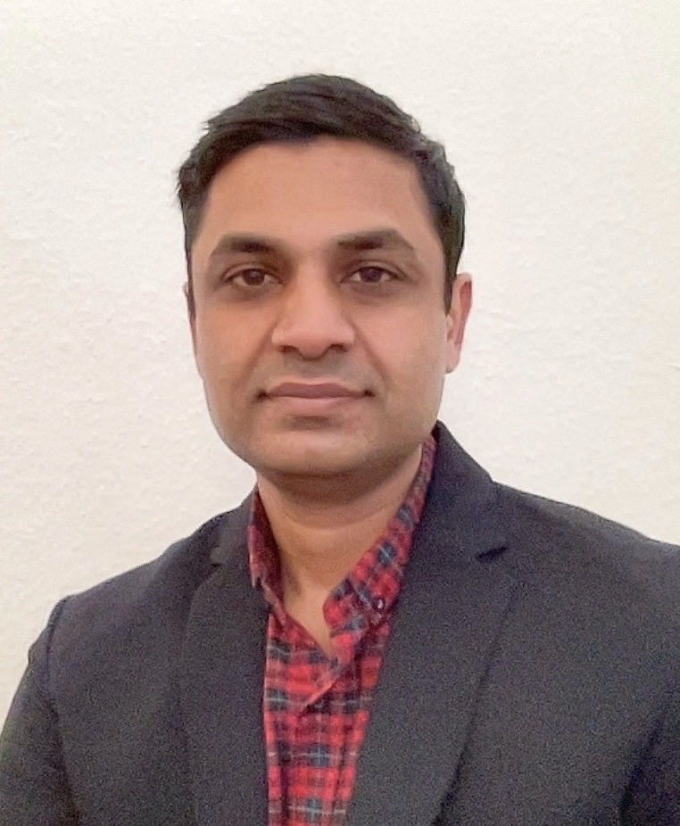

Muhammed Junaid Khan

Profile
I am seeking the position of Aviation Director, Engineering Line Manager, or Base Manager, where I can
leverage my extensive project management, engineering expertise, and aircraft maintenance experience to
drive the company’s objectives and vision. With over 21 years of experience in the aviation industry,
including roles with airlines and MROs, I bring a proven track record in managing aviation programs,
projects, engineering operations, and both line and base maintenance activities.
I hold multiple certifications from EASA, UKCAA, and PCAA for narrow and wide-body aircraft, and I possess
comprehensive management experience in line maintenance, outstation operations, and base maintenance.
My expertise extends to leading teams, optimizing resources, managing customer relationships, and
collaborating with stakeholders to deliver exceptional results.
I am skilled in decision-making, analytical problem-solving, and implementing lean processes to enhance
efficiency and effectiveness in aircraft maintenance operations for both airlines and MROs.
Vision & Strategic Leadership
- Played a key role in driving the organization’s growth, aligning engineering and maintenance
strategies with its overarching goals and vision.
- Spearheaded initiatives to enhance operational processes, implement technological advancements,
and upgrade facilities, tools, inventory systems, and ground support equipment (GSE).
- Collaborated cross-functionally with production, engineering, planning, logistics, and quality teams to
ensure engineering objectives were seamlessly integrated with corporate goals.
Management of Projects and Programs
-
Successfully managed and completed approximately nine months of extensive corrosion inspections
on aircraft, generating over 200 OEM technical reports and accounting for roughly 19,500 man-
hours. Delivered results while overseeing multiple projects simultaneously.
-
Led end-to-end maintenance operations for three lines, managing 45 EasyJet fleet aircraft within an
eight-month period, ensuring timely and efficient delivery of services.
Operational Excellence
- Implemented lean and hybrid methodologies to optimize team productivity and accelerate aircraft
delivery timelines.
- Elevated standards of quality and maintenance while ensuring strict compliance with civil aviation
regulations.
Budget Management and Profit & Loss
-
Oversaw substantial engineering and maintenance budgets, implementing cost-control measures
and maximizing return on investment for tools, parts, and resources.
-
Managed relationships with external suppliers and vendors, coordinating contracted mechanics,
facility upgrades, engine borescope inspections, non-destructive testing (NDT), and other
outsourced services to ensure operational efficiency.
Culture & Talent Development
-
Developed and expanded engineering teams by fostering internal leadership and cultivating a
collaborative and inclusive engineering and maintenance culture.
-
Improved team retention rates through the implementation of professional development programs
and initiatives that promoted a positive and engaging workplace environment.
KPIs & Measurable Results
- Successfully expanded team size to enhance operational capacity and efficiency.
- Achieved an increase in project completion rates, driving timely delivery of key initiatives.
- Delivered significant financial savings through strategic maintenance and engineering improvements.
- Reduced non-productive time by optimizing resource utilization and operational effectiveness.
Merger Experience
- Led engineering teams through the merger of two companies and their subsequent acquisition by a
parent corporation, ensuring seamless integration and continuity of operations.
- Consolidated and optimized processes by integrating the best practices from both organizations into
a unified, lean, and efficient operational framework.
EDUCATION & QUALIFICATIONS
- EASA Netherlands B1.1/ B2/ C A320 Family CFM56/ V2500/ CFM LEAP 1A/ IAE PW1100G/ B737 CL/ NG
/ MAX/ A330 RR 700/ PW 4000/ GE CF6/ A350 RR Trent XWB/ B787 GEnx/ RR Trent 1000
- UKCAA B1.1/C A320 Family CFM56/ V2500/ CFM LEAP 1A/ IAE PW1100G/ B737 CL/ NG/ MAX /
A330 RR 700/ PW 4000/ GE CF6/ A350 RR Trent XWB/ B787 GEnx/ RR Trent 1000
- PCAA B1.1 A320 Family CFM56/ V2500 & B737NG
Buckinghamshire New University, U.K – Master of Science- Aviation Security----2025
Scheduled For Project Management Professional Certification Exam- Application is Accepted
Buckinghamshire New University, U.K – Bachelor of Science- Aviation Management for Professionals----2022
Pakistan International Airlines Training Centre - 3 Year Aerospace Apprenticeship----2010
University of Karachi - Bachelor of Commerce- Business Administration & Commerce----2009
Project Manager | RAS Saar GmbH-----September 2023 to Till Date
Project Management – Maintenance Checks & End-of-Lease Deliverables:
Successfully managed and delivered maintenance checks and end-of-lease projects on time, within budget,
and to high-quality standards, consistently earning positive customer feedback. Responsibilities included
preparing and submitting detailed quotations for customer approval, overseeing overall billing for man-hours,
materials, freight costs, and third-party services, and providing exceptional customer support throughout the
project lifecycle.
Project Manager | Hangar 901 Aircraft Maintenance GmbH July 2022 to August 2023
Project Management – C Checks, A Checks, and End-of-Lease Deliverables:
Successfully managed and delivered C Checks, A Checks, and end-of-lease projects on time, within agreed
budgets, and to exceptional quality standards, consistently achieving high levels of customer satisfaction and
positive feedback.
B1/B2 Certifying Engineer | Pad Aviation Technics GmbH-----Dec 2019 to June 2022
Pad Aviation Technics is a Maintenance Repair Organization (MRO) headquartered in Paderborn, Germany,
with seven additional line stations strategically located to provide comprehensive maintenance services to
major airlines worldwide.
Certifying maintenance for the A320 Family (CFM56 and V2500 engines) and B737 Classic/Next Generation
(B737CL/NG) aircraft.
B1 Qualified Mechanic | Volga-Dnepr Gulf-----Jan 2018 to Jul 2019
Volga-Dnepr Gulf is a Maintenance Repair Organization (MRO) located in Sharjah, UAE.
Aircraft Worked On: A320 Family, B737 Classic/Next Generation (B737CL/NG), B747-400, and B777.
Scope of Work: Conducted B1 Base Maintenance Checks, including C and D Checks.
Engineering Manager Line Station | Airblue Ltd.-----Oct 2016 to Jan 2018
Airblue is a private Pakistani airline operating a fleet of Airbus A320 family aircraft.
Engineering Manager – Multan Station:
As the Engineering Manager, I was responsible for creating schedules for engineers and technicians based
on flight operations. I successfully managed audits conducted by Civil Aviation Authorities, the company, and
third-party organizations. Additionally, I liaised with airport authorities, senior management, and customers to
ensure seamless operations.
I ensured the smooth functioning of all flights at Multan Station by adhering to aircraft maintenance manuals
and procedures. My role also involved continuous improvement initiatives, such as upgrading facilities,
optimizing tool stores, and securing line maintenance approvals from Civil Aviation Authorities. I prioritized
the professional development and satisfaction of engineers and technicians, fostering a productive and
efficient work environment.
Senior Aerospace Technician | Airblue Ltd.-----Mar 2015 to Aug 2016
Conducted Line Maintenance tasks for the A320 Family (B1 level) and developed a structured On-the-Job
Training (OJT) logbook for A320 CFM56 engine maintenance, enhancing training and competency standards
for B1 engineers.
Senior Technician | Pakistan International Airlines-----Aug 2011 to Mar 2015
Pakistan’s flag carrier, operating a large-scale aircraft maintenance facility.
Aircraft Worked On: B777-200/300, B747-200/300, B737-300, and A320 Family.
Scope of Work: Performed B1 tasks in both Line and Base Maintenance environments.
Aircraft Technician (Third Party Contractor) | Pakistan International Airlines-----Jan 2005 to Oct 2007
Aircraft Worked On: B747-200/300, B737-300, and A310.
Scope of Work: Performed B1 tasks in both Line and Base Light Maintenance environments.
Aerospace Technician Trainee|Schon Air Ltd.-----Jan 2004 to Sep 2004
Aircraft Worked On: Cessna 172, Cessna 152, Cessna 402C, and Piper PA-34-220T Seneca III.
KEY SKILLS
Management. Company Oriented. Team Player. Persistent. Empathetic. Solutionist. Optimistic. Analyst.
ADDITIONAL INFORMATION
Germany Niederlassungserlaubnis/ Germany Driving License/ ZUP Valid: 16 July 2029
Languages – Fluent English; Urdu; Basic German
Software & Company Accounts Usage Experience= Microsoft Office, AMOS, OpenProject, Wings,
PAMMIS, RAMCO, AirNavX, MyBoeingFleet, Dehavilland, ATR, Collins Aerospace.
Trainings- Continuation Trainings (HF/EWIS/FTS) Valid Till 08 September 2025
A350 XWB Trent Level 3 Type Training [2021] B787 With Both Engines Level 3 Type Course [2020]
A330 Differential with All 3 CEO Engines Level 3 Type Course [2020] Train the Trainer [2014]
B737NG CFM56 Level 3 Type Training [2019] B737-300/400/500 Differential Level 3 [2021] B737 MAX
A320 CFM / V2500 Level 3 Type Training [2015] A320 LEAP 1A [2019] A320 NEO PW1100G [2021]
INTERESTS
Family. Self-Improvement. Achieving Personal Life Goals. Travel. Adventure. Nature Lover.Basketball.
REFERENCES
Farhan Waheed Mir | Chief Engineer Line Maintenance- Pakistan International Airlines
Azhar Qayyum | Director Engineering & Maintenance- Airblue Ltd
Saeed Al-Kailani | Base Maintenance Manager- Volga-Dnepr Gulf
Michael Pohl | Managing Director & CEO- Pad Aviation Technics
Tobias Fahr | Base Maintenance Manager- Hangar 901 Aircraft Maintenance GmbH
Michael Sattler | Managing Director- Contact Air Technik GmbH
Thomas Von Hake | Managing Director- RAS Saar GmbH